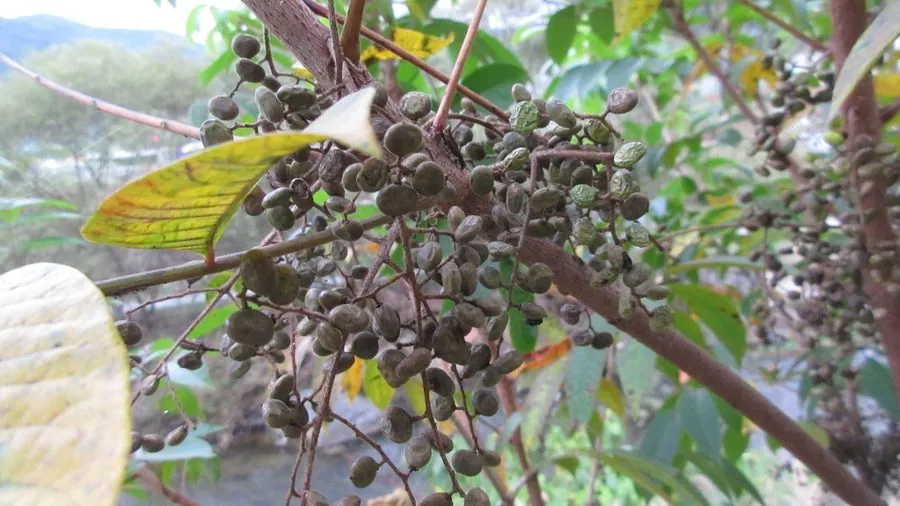

农作物与经济植物 · 植物界
漆树 Toxicodendron vernicifluum

漆树是漆树科落叶乔木，割取的生漆是传统天然涂料，耐腐耐磨，用于漆器和家具，木材也可制器具。
- 分类
- 门被子植物门纲双子叶植物纲目无患子目科漆树科属漆属
- 栖息环境
- 温带山地与丘陵，喜光、耐寒耐旱
- 地理分布
- 原产中国，主产于陕西、湖北、四川、云南等地
- 保护级别
- 暂无评估（栽培作物）
物种志
漆树是漆树科落叶乔木，株高 10–15 m，树皮灰白色，有纵向裂纹。奇数羽状复叶，小叶 7–15 枚，卵形，边缘全缘。花小，黄绿色，圆锥花序。果实为核果，扁圆形，成熟时黄褐色。树皮受伤后会分泌汁液，割开后渗出乳白色汁液，即生漆。
漆树原产中国，栽培和利用历史超过七千年，河姆渡遗址曾出土漆器。它喜光、耐寒耐旱，适宜在土层深厚的山地生长。生漆是天然涂料，耐腐、耐磨、耐热，广泛用于漆器、家具和船舶；漆籽可榨油，木材可制器具。生漆接触皮肤可能引起过敏，割漆和涂刷需做好防护。中国陕西、湖北、四川等地是主产区。漆树喜光，幼树期稍耐阴。
形态与习性
- 株高10–15 m，落叶乔木
- 叶奇数羽状复叶
- 果实扁圆形核果
- 产品树皮割取生漆
- 用途漆器、家具与涂料
- 注意生漆可致皮肤过敏
趣味知识
- 生漆是从漆树树皮割取的乳白色汁液，接触空气后变黑。
- 中国利用生漆的历史超过七千年，河姆渡遗址出土过漆器。
- 生漆可能引起皮肤过敏，割漆和涂刷需做好防护。